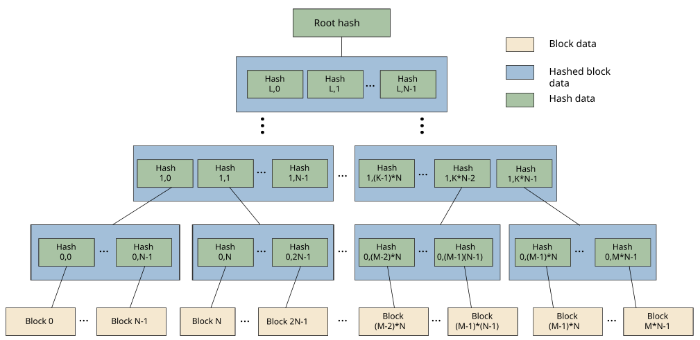

QNX Trusted Disk (QTD) devices provide integrity protection of the underlying disk data in secure boot environments. They can extend the secure boot chain up to the core operating system filesystem that stores the critical binaries and configuration files.
The QTD protection mechanism is based on a Merkle tree and is supported by the fs-qtd.so shared object.
When building a QTD image, a metadata hash tree is constructed from the blocks of the source filesystem image.

QTD disk devices are read-only. The QTD driver sits between the raw block device and the upper filesystem layer that is supported (for example, a Power-Safe filesystem supported by fs-qnx6.so). On read access, it uses the hash tree metadata to verify the integrity of the data. If the verification fails, an error is returned instead.
The QTD metadata is signed and verified using a key pair. Verifying the signature ensures that the root hash of the tree is valid and hasn't been tampered with. It is the root of the trusted verification mechanism.
The size of the QTD image depends on the chosen block size as well as the chosen digest algorithm. You can use the mkqfs utility to generate statistics that describe how much additional space the metadata consumes.
You can use QTD as a package container solution by mounting files that are themselves QTD images. For an example, see the fs-qtd.so entry in the Utilities Reference.
Use the following table to choose the best performing algorithm based on the desired security strength of the digest function.
| Architecture | Digest security | |
|---|---|---|
| 128 bits | 256 bits | |
| 64-bit | sha512‑256 blake2b256 blake3 |
sha512 blake2b512 |
Refer to the mkqfs utility for the supported key types and signing algorithms.
QTD uses the cryptographic algorithms available via the QNX cryptography library
(qcrypto). It can use any qcrypto plugin that
supports the chosen digest algorithm and signature type. For more information, see QNX Cryptography
Library
in the System Security Guide.